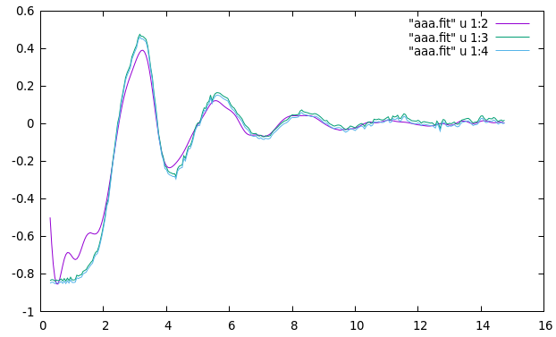
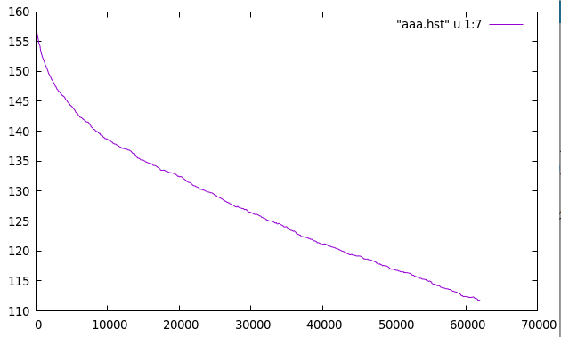
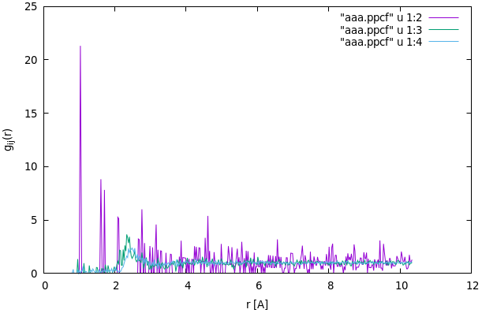

RMC POT のアウトプットファイル（解説）
この文書は RMC POT の代表的なアウトプットファイルについて、各ファイルの形式と中身の見方を簡潔に説明します。主に以下のファイル形式を扱います。
.fit — 構造因子 S(Q)（または F(Q)）のフィッティング結果
.hst — Χの値。フィッティングの進み具合
.ppcf — 部分二体分布関数 gij(r)（PPCF）の出力
.cfg — 原子配置（構成ファイル）
共通の注意点
多くの出力はスペース区切りのテキストで人間が読み取れる形式になっています。可視化や解析のために CSV 等に変換しても良いです。
単位：距離は Å（オングストローム）で表示されることが多いです。
参照マニュアル（RMC++ user guide）も併せて参照してください: https://www.szfki.hu/~nphys/rmc++/RMC_POT_user_guide.pdf
.fit ファイル — 構造因子S(Q)へのフィッティング状況
ファイルには計算で得られたデータと実験データの比較が出力されます。ファイル冒頭には各データセットの種類と数が表示されます（例：g(r), S(Q), F(Q) などのデータセット数）。
aaa.fit
Calculated and experimental total data for each data sets
0 g(r) data sets
0 S(Q) data sets
1 F(Q) data sets
0 F(g) data sets
0 E(k) data sets
Total F(Q) for data set #1/1
Renormalization factor a= 1.000000e+00
Renormalization factor b= -1.186518e+01
Renormalization factor c= 0.000000e+00
Renormalization factor d= 0.000000e+00
Q F(Q) RMC++ renorm exp. F(Q) original exp. F(Q) background
2.635850e-01 -1.290579277856e+00 -1.005258621913e+01 1.812590000000e+00 -1.186517621913e+01
2.812760e-01 -1.294920422437e+00 -1.052247621913e+01 1.342700000000e+00 -1.186517621913e+01
2.989660e-01 -1.299385311315e+00 -1.094524621913e+01 9.199300000000e-01 -1.186517621913e+01
: : : : :
主要な項目の意味
Q：波数（単位は通常 Å⁻¹）
F(Q) RMC++：RMC によって計算された F(Q) の値（出力名は F(Q) になっている場合がある）
renorm exp. F(Q)：実験データに対して何らかの正規化（renormalization）を適用した後の F(Q)
original exp. F(Q)：元の実験データ（補正前）の F(Q)
background：背景項（背景補正値）
13行目からは、Q値に対するF(Q)の計算結果と実験結果が並んでいます。
F(Q) = S(Q) - 1
ここで用いられるF(Q)は、通常表示される構造因子S(Q)から1を引いたものであることに注意してください。 この結果をプロットするときには、 S(Q)=F(Q)+1 と、してプロットします。

図.RMCでできている構造モデルのS(Q)と、実験のS(Q)を並べて比較してみる。（実験の方は２個あるが補正しただけ。）
詳細は以下のユーザーマニュアルの式(E3)周辺を参照してください https://www.szfki.hu/~nphys/rmc++/RMC_POT_user_guide.pdf
.hstファイル — Χの値。フィッティングの進み具合
This file contains History data produced by History::save
:
:
For F(Q) data set 1 F(Q) fitting was used
generated tried accepted time tried/gen acc/tried chi2_tot/data_point; chi2/F(Q)_set#1;
0 0 0 0 0.000000 0.000000 1.578930954817895e+02 4.578899768971894e+04
30 17 11 0 0.566667 0.647059 1.574103409681942e+02 4.564899888077633e+04
77 39 22 0 0.468085 0.500000 1.569245983657412e+02 4.550813352606496e+04
113 62 33 0 0.638889 0.478261 1.567761016798288e+02 4.546506948715034e+04
146 80 44 0 0.545455 0.611111 1.563252734257866e+02 4.533432929347811e+04
163 91 55 1 0.647059 1.000000 1.562772215647136e+02 4.532039425376695e+04
211 116 66 1 0.520833 0.440000 1.560415962591003e+02 4.525206291513910e+04
249 142 77 1 0.684211 0.423077 1.557480271250309e+02 4.516692786625896e+04
:
:
61999 36721 9713 119 0.575342 0.261905 1.117579568397242e+02 3.240980748352001e+04
62010 36729 9715 120 0.727273 0.250000 1.117680889621432e+02 3.241274579902153e+04
The Rw values for the data sets are:
F(Q) set #1 1.755480e+01
The calculation method for the chi_square/data sets
1 F(Q) data series : normal
RMCのステップが進むにつれて、フィッティングがどう改善しているかを示すものである。 重要なのは7列目である。 Χの値が示されている。 Χは 実験S(Q)とRMCによる構造のS(Qとの、差の二乗の総和である。（さらにシグマで重み付けなどあるけれど） プロットしてみると、ステップが進むにつれ、減少している事がわかる。つまり、フィッティングはよくなっている様子が見れる。 これが、じゅうぶん小さくなるとか、S(Q)を実際プロットとしたり、gij(r)をみたりしながら、収束を判定する。

図. Χをプロットしたもの。
二対分布関数 gij(r)
aaa.ppcf
This is an object of Class PPCFSet
3 number of atom types
For data set(s) 1
306 number of discretization bins for the ppcf
0.000000000 rmin value (Angstroms)
7.650000000 rmax value (Angstroms)
0.025000000 discretization step (Angstroms)
r value + 6 partial g(r) at the middle of the histogram bin
0.012500000 0.000000000 0.000000000 0.000000000 0.000000000 0.000000000 0.000000000
0.037500000 0.000000000 0.000000000 0.000000000 0.000000000 0.000000000 0.000000000
0.062500000 0.000000000 0.000000000 0.000000000 0.000000000 0.000000000 0.000000000
0.087500000 0.000000000 0.000000000 0.000000000 0.000000000 0.000000000 0.000000000
0.112500000 0.000000000 0.000000000 0.000000000 0.000000000
: : : : : :
このファイルは、二対分布関数gij(r)の計算結果を示しています。 11行目からは、r値に対する各原子種間のgij(r)が並んでいます。 今、3種類の原子種を扱っているので、6つのgij(r)が表示されています。 r[Å], g11(r), g12(r), g13(r), g22(r), g23(r), g33(r)の順で表示されています。 （ユーザーマニュアル、B章最終行）

図. g11(r), g12(r), g13(r) の例。
原子配置（3次元モデリング）
aaa.cfg
これはインプットファイルと同じ形式のものです。 シミュレーションを続けると上書きされます。 適宜、変換して、VESTA、ovitoなどで可視化します。

図. RMC_DFTを通して得られた構造の例。